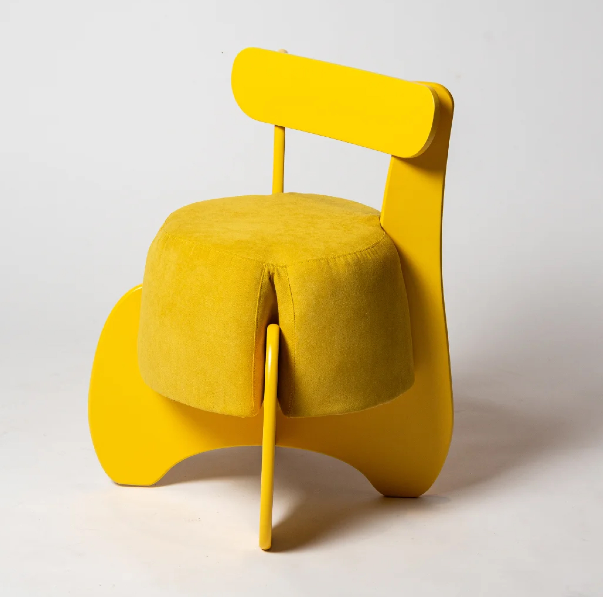
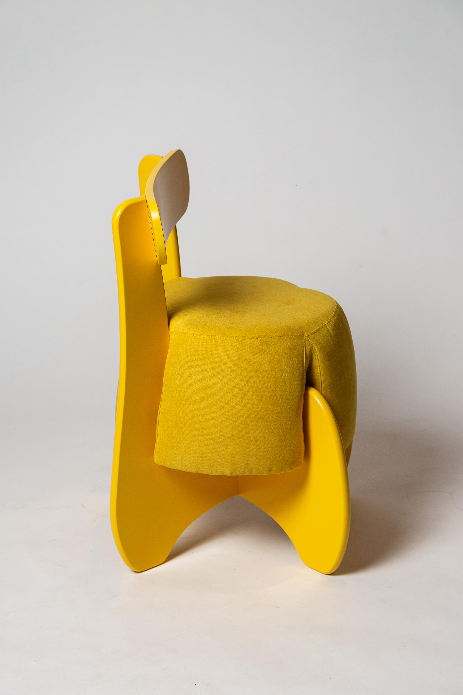
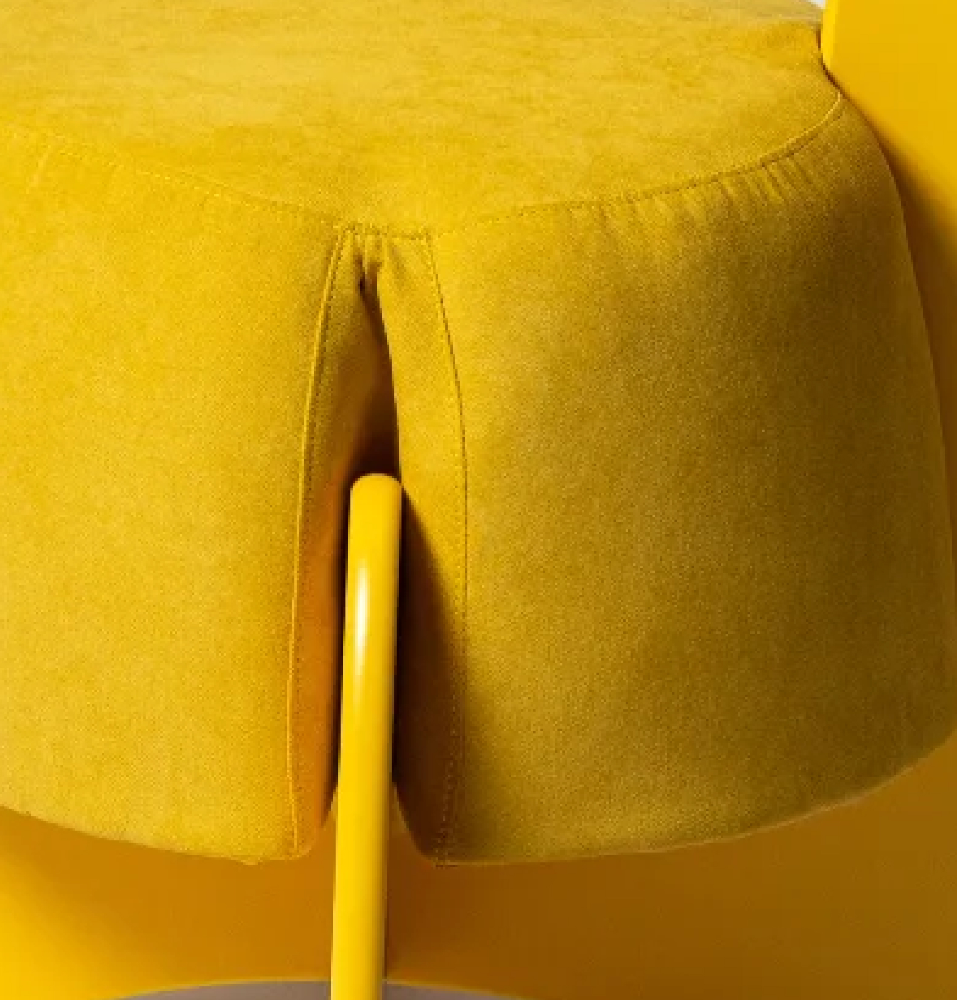
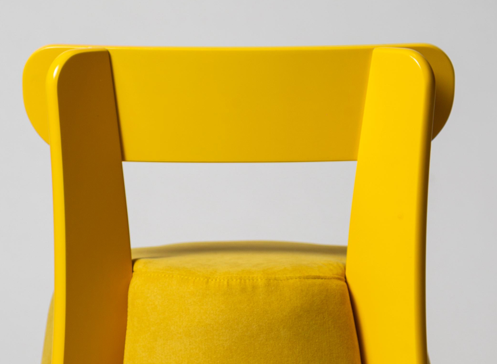
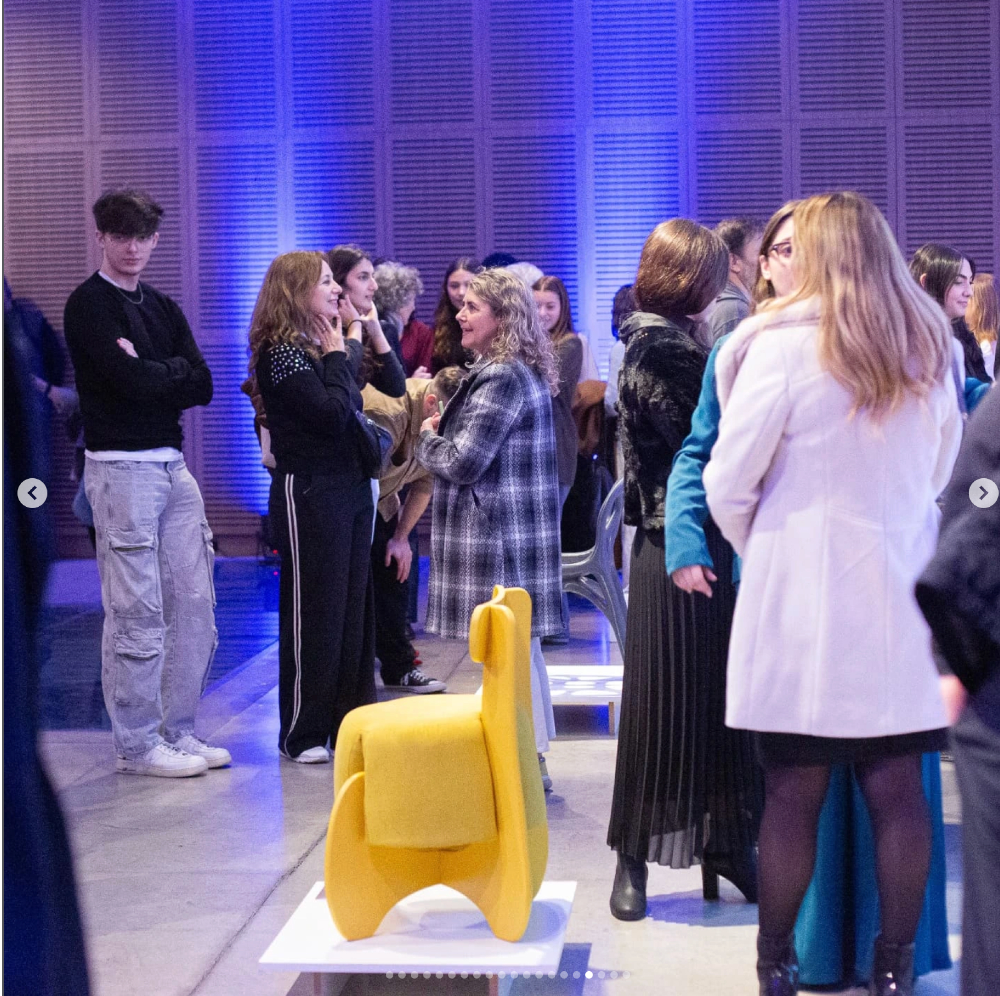
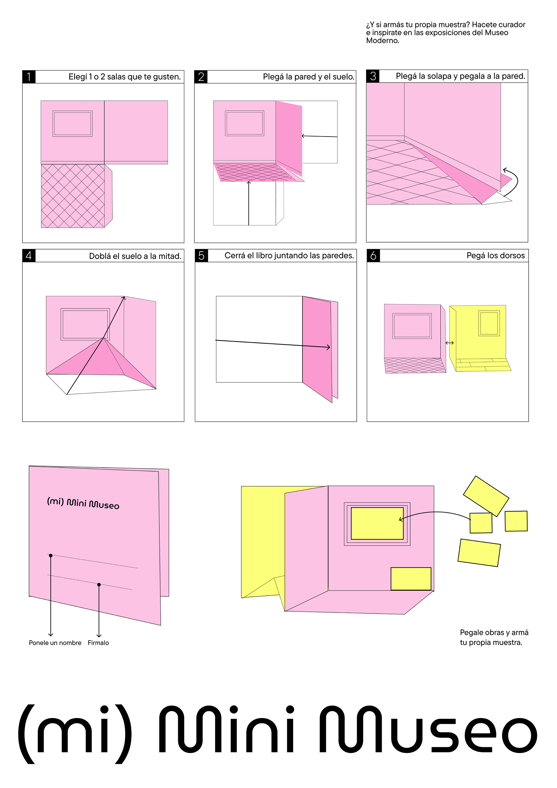
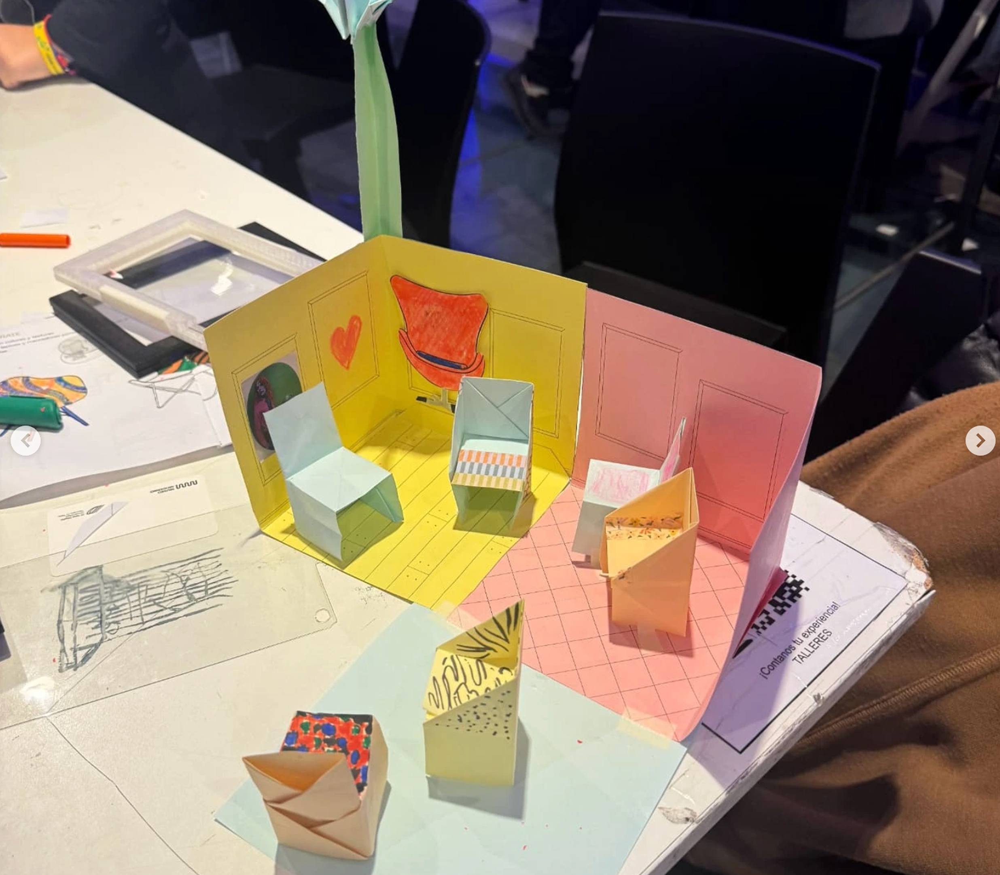
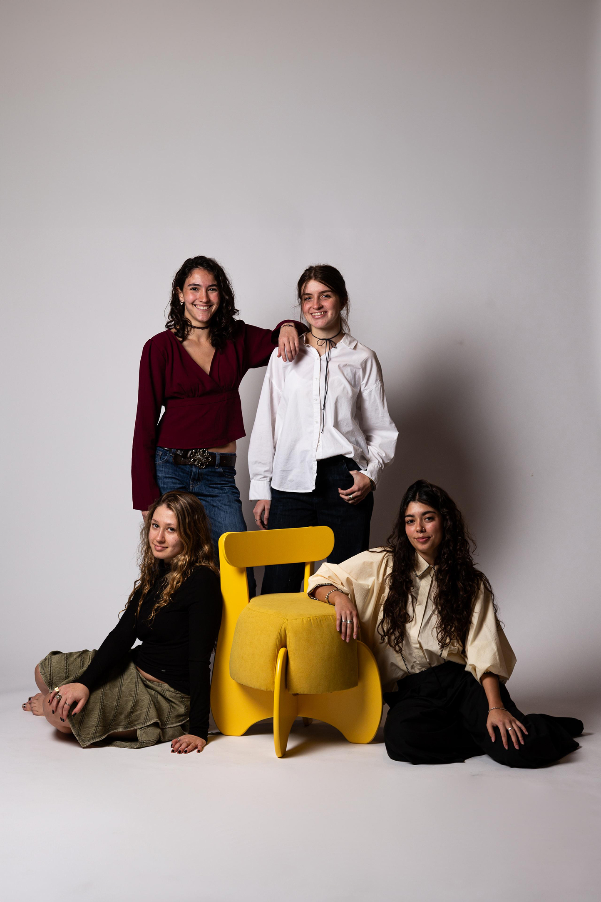

BRIEF
Conceptualization and development of a furniture piece inspired by the identity of Universidad Torcuato Di Tella, taking as a starting point its values, history, and role as an academic and cultural community.

Insight
Design is shaped by two complementary forces: the frameworks that support it—technique, history, and knowledge—and the creativity that moves through them and pushes them further.
Solution
A furniture piece where a rigid structure contains and compresses a soft volume that appears to push through and tension it. The form materializes the dialogue between structure and experimentation: design relies on its rules, while simultaneously challenging and reshaping them.
Concept — “Supporting and Crossing Through”
The piece explores the encounter between a structure that supports and a volume that passes through it. The structure represents the frameworks that organize design, while the amorphous volume embodies creativity, experimentation, and interdisciplinarity.



"De la silla al infinito“ ( JULY 2025 )
Participation in the collective exhibition "De la silla al infinito“ ("From the Chair to Infinity”) — Museo Moderno, Buenos Aires, Argentina. In conjunction with the exhibition, a series of workshops open to the community were held at the Museo de Arte Moderno de Buenos Aires. Specific pieces were developed for these activities, inviting participants to experiment with building using recycled materials and to explore the museum graphically through a playful, design-oriented approach.



